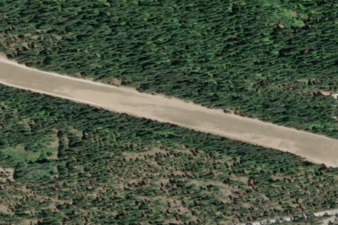

LAKE WENATCHEE STATE
27W · WA

Aerial imagery source: Esri, Vantor, Earthstar Geographics, and the GIS User Community
| Identifier | 27W |
|---|---|
| State | WA |
| Runway length | 2,473 ft |
| Runway width | 100 ft |
| Surface | TURF |
| Runway | 09/27 |
| Elevation | 1,939 ft |
| Ownership | public |
| CTAF | 122.9 |
| Coordinates | 47.81941361, -120.71989416 |
Notes
[shortfield] Location Overview The airport sits in Chelan County, approximately 14 nautical miles northwest of Leavenworth, Washington, at an elevation of 1,939 feet MSL. It is owned and operated by the Washington State Department of Transportation's Aviation Division and covers 35 acres. The airstrip is nestled among the forests of the Wenatchee National Forest on the eastern slopes of the Cascade Range, with Lake Wenatchee nearby. Camping & Recreation The airport sits adjacent to Lake Wenatchee State Park, which offers 197 well-prepared campsites, with fishing, water recreation, and hiking available at the nearby lakes. On the airport itself, only primitive camping is available with no facilities — pilots should contact the airport manager to discuss options. The state park also offers an impressive range of year-round activities, including water skiing, white-water kayaking, windsurfing, swimming, motorboat launches, rock climbing, and trails for hikers, bikers, and equestrians. In winter, the area supports cross-country skiing, dog sledding, snowmobiling, and ice climbing. Notes & Warnings The 2,473-foot turf runway has a 100-foot-wide center strip outlined with reflectors. Density altitude issues can be anticipated on hot summer days. The runway surface is somewhat rough, and animals are very common on and around the strip. Trees surround the airport and encroach on both approach ends. Work crews and equipment may also be present, as a local winter recreation club handles much of the maintenance. The airport is generally open from June 1 through October 1, and an overflight to check field conditions and for obstructions is strongly recommended before landing. History The airport has been adopted by the Washington Pilots Association's Wenatchee Chapter, which plays an active role in its upkeep and advocacy. Beyond recreational flying, the airstrip has taken on a broader emergency role over the years. Like several other small state airports in Washington, Lake Wenatchee has served as a front-line hub for wildfire response operations, supporting air tankers, helicopters, and emergency crews who can launch from this remote strip to cut response times and help contain fires in the surrounding forests. Its dual identity — quiet backcountry destination in fair weather, critical emergency staging area when fires threaten — reflects the broader importance of Washington's rural aviation infrastructure.